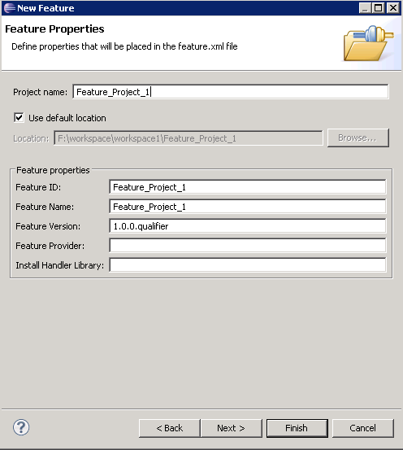

To create a feature plug-in project:
-
Click
 .
.
-
In the New Feature window, select Feature Plug-in Project
and click Next.
-
In the New Feature Properties window, type a name in the Project Name
field and click Finish.

-
In the next window, select any referenced plug-ins that you may require, check the Initialize from a
launch configuration radio button and select OSGi Framework from the drop-down box.
-
Click Finish. You can now see the new feature plug-in development project in the Package Explorer view.
- Right-click on the project to open the context menu.
- In the context menu, click Configure > Convert to Faceted Form.
- In the Properties window, select the Swordfish Application check box under
Project Facets and select Swordfish Runtime under the Runtimes tab.
- Click Apply and Finish.
This project can now be added to the runtime server as described in the next topics.